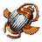
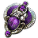
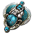

Tutte fanno currency, ma da canali diversi: Harvest vende lifeforce, Destructive Play zaini dei mercenari, Syndicate e blueprint. La terza esce dall'atlante: 5 Lost Ruins Chart a Voyage, i Vaal Vessel dentro e Kingsmarch che corre le mappe che ne cadono — ma 🔴 i suoi 20-40 divine l'ora sono dichiarati, non misurati. La quarta vende Delirium Orb e zaini infamous — e il suo motore è il ritmo, non il bottino. Si scelgono per cosa produci, non per quanto rendono.
patch 3.29.2lega Allflamerese misurate il 19 agosto 2026prezzi scarab del 23 agosto
🎮 Chart — quali tenere · vale per tutte e quattro
Le tre che si vendono — Anchorfield 130c · Clam-infested Shelf 129c · Kishara's Rest 95c · misurate il 24 agosto su 543 inserzioni
anchor|kishara|clam
Le tre da buttare — Abyssal Plain, Seafloor Ridges, Undersea Groves: 1c e +25% di quantità, spazzatura due volte
plain|ridge|grove
🔴 Il prezzo è il nome dell'area, non la quantità: Hazardous Depths ha +100% di quantità e vale 16,5c, Anchorfield ha +44% e ne vale 130. L'ingresso del Voyage (Hazardous|Ruin) sta nella scheda 3; il censimento delle 16 aree e la regex per le Chart già rivelate in Prezzi → Prezzare le Chart.
Concorrenza: il 7% degli alberi censiti su poe.ninja — è l'unica delle quattro schede per cui questo numero esista. ⚠️ Per le altre tre servirebbe rileggere la pagina degli atlas tree, e nessuno l'ha fatto.
1×Titanic Scarab of TreasuresUn premio in più dal boss1,36c
1×

Scarab of Adversaries4 pacchi di rari specchiati1,6c
1×Scarab of Divinity3 rari Pantheon-Touched1,21c
1×Domination Scarab3 shrine · buffano te, non i mostri1,71c
5° slot — medio18,94 chaos in tutto
1×

Horned Scarab of Nemeses2 modificatori in più su ogni raro18,94c
5° slot — alto55,35 chaos in tutto
1×Harvest Scarab of DoublingLifeforce raddoppiata · 🔴 24c l'8 ago, 39,2 il 13, 55,4 il 23: in due settimane ×2,3. ⚠️ Il netto a mappa qui sotto è quello del 13 e va rimisurato55,35c
2 · Destructive Play currency1,52-1,77 div/mappa il 19/8senza astrolabio
Quattro meccaniche su City Square. Non è un albero da lifeforce: si vive di zaini dei mercenari, del Syndicate e dei blueprint delle Smuggler's Cache. Il numero trasportabile è per mappa, non per ora — e il campione del 19 agosto (20 mappe, +35,33 d) è il più alto mai misurato qui.
Quando: quando vuoi un reddito che non chiede manutenzione fuori dalla mappa — niente spedizioni, niente astrolabi da rinnovare
Difficoltà
Media7-8 boss a mappa · merc che one-shottano
Investimento
33-64c a mappa15,4c i 5 scarab · mappa 17,6c a 6 mod o 48,7 a 8 · ✅ nessun astrolabio: 7 caduti in 20 mappe · il campione del 19/8 girava con 48,9c di scarab
Resa
1,52-1,77 div/mappa✅ 20 mappe il 19/8: +35,33 d · 1,20 senza Medallion e 6 Divine · i precedenti: 0,77 e 0,55
Ritmo
7,6 min/mappa✅ cronometrati il 19/8: 20 mappe in 2h32m → 14,0 div/ora · il tetto del 17/8 (≤2,3 min) era un consumo, non un cronometro
Dettaglio — Syndicate, mercenari, l'albero, i cinque scarab, la resa
Come si corre
Destructive Play — la Maven spawna fino a 3 boss extra.
Betrayal — Syndicate Medallion 1.110 c5,6 divine, 18 ago, il 12,5% dei tiri del leader a 3 stelle.
Mercenari — merc garantito + uno infamous. Zaini con divine e ancient orb.
Heist — clicca le Smuggler's Cache. Sul blueprint guarda enchant e rarità: Currency or Scarabs e Experimented Items valgono, gli altri tre no. 🔴 La magic vale metà di bianca e rara — 100-110c contro 180-200c. Sui contratti l'unico è The Twins, 40c.
🔴 Pulisci tutta la mappa prima del boss: la Maven evoca 1-3 boss extra, e il numero scala coi mostri ancora vivi quando lancia. Conta qualunque mostro — mercenario e Syndicate compresi. 💡 Rushare non fa perdere i boss, fa perdere il numero.
Cosa
Come
Perché
mercenari
i vile in qualsiasi ordine
dal 13 agosto non diventano più NPC uccidendo il main
anomalie
solo Gambling District e Manor Foyer
le altre si lasciano lì, così la prossima è una buona
invitation
alch, ed exalt se la build regge
le conqueror exalt scalano con la quant del boss
⚠️ Entrare in un'anomalia butta gli scarab fuori dal map device.
🎮 Da tenere aperto mentre giochi
TrincoEL — Elementalist
1 · Le esclusioni — 15 mod su 16, tutti e nove i letali · 62 caratteri
🔴 Synthesised Stabilityfunziona solo dentro una Shaped Region, e la crea l'astrolabio — che questa strategia non usa. Al prossimo respec, rifondalo e prendi High Stakes0 effetto qui
Betrayal Bribery · Effective Leadership · Test of Loyalty · Lethal Extraction✅ tutte e quattro
HeistSecret Stash + 6 Cache Chance · Casing the Joint · No Honour · Dutiful Soldiercache +100%
Mercenari zaini pieni · 10% droppa tutto · 2 item in più · Contract Killers · presenza e Infamous dagli scarabsolo loot
Jun in mappa 10 Betrayal Chance + Obsessed with Vengeance+104%
Effetto dei mod di mappa Mounting + Multiplying Modifiers · Invasive Adversaries · più rarisì
Amplified Artefacts +50% scarab per ogni mod sul rarosì
Scarab per i boss extra, non per il ground loot66%
Trarthan Scarab🔴 obbligatorio — un mercenario in area, garantito1,44c
1×Influencing Scarab of Interferenceun boss extra attorno a ogni boss di mappa1,82c
1×Horned Scarab of Nemeses2 modificatori in più su ogni raro — Amplified Artefacts paga per modificatore18,94c
2×Scarab of Adversaries4 pacchi di rari specchiati in più ciascuno — limite 23,2c
💡 Nemeses aggiunge modificatori per raro, Adversaries aggiunge rari — i secondi costano 1,50c contro 18,3. ⚠️ Niente Betrayal Scarab: Jun è già garantita dall'albero.
Gli scambi possibilinessuno è di default
2°Horned Scarab of Nemesesil limite è 2: il secondo porta i modificatori da +2 a +4 su ogni raro+18,94c
1×Trarthan Scarab of Infamymerc infamous garantito + 2 wild mercenaries · 🔬 col netto del 19/8 deve rendere il 7,4%, non più il 25%18,93c
1×

Horned Scarab of Awakeningi boss di una Maven Invitation a caso — solo su T16+88,53c
🔬 Il secondo Nemeses vale 190c sul ciclo da 20: è un A/B, non un acquisto. ⚠️ Infamy e Awakening costano sei volte il carico — e i 4 nodi infamous non lo sostituiscono: danno «increased chance», lo scarab una garanzia più 2 wild mercenaries.
🔴 Il Renown è misurato (19/8) e resta fuori: rendeva 18,8c contro i 18,7 di costo — e oggi che costa 16,0c il margine resta ~2c, troppo poco per un verdetto nuovo senza rimisurare — e 200 dei 377c di uniche sono un singolo Paradoxica di origine non stabilita. Senza di lui: 8,8c a mappa, meno della metà del costo.
Mappa — City Square
Layout10 il migliore del pool
Densità4 bassa: media 6,29
Boss6 tre boss di mappa
Scrying Orb consigliatoStrand 3c · +4,1c a mappa
Perché cinque per tipologia
Ogni conquistatore ucciso lasciail suo Crest
I quattro Crest insieme fanno1 Maven's Invitation
20 mappe = 5 set completi5 invitation
🔴 Un set incompleto non vale niente: servono i quattro conquistatori.
Netto 177 righe · la somma torna col badge+35,33 d
Forbice il prelievo del carico (48,9c/mappa) cade in parte fuori finestra1,52-1,77
🔴 Medallion 1.084c + 6 Divine grezzi il 32% del bottinosenza: 1,20 d
✅ Astrolabi caduti 7 = 639c · +39% sopra la stima del 18/832c a mappa
⚠️ Maven's Chisel 7 in 20 · erano 0,90, ma su un altro albero0,35 a mappa
Campione
Mappe
d/mappa
Sessione dell'autore, riprezzata
13
1,28
Ciclo in casa, 15-16/8
20
0,77
Con astrolabio, 17/8
10
0,55
19/8 · Renown+Infamy, senza astrolabio
20
1,52-1,77
⚠️ Questo snapshot non è netto per costruzione: lo stash conta gli scarab al prelievo, non al consumo — 19 Renown e 19 Reinforcements stanno nella finestra prima. Composizione: currency 32% · mappe e frammenti 28% · scarab 26% · astrolabi 9% · uniche 5%.
✅ I 7 astrolabi valgono due terzi del carico da soli: «you can only drop Astrolabes if you're not using Astrolabes» non è una clausola, è la voce che paga. La scelta «senza astrolabio» ora è misurata, non argomentata.
🔴 L'Heist non paga i suoi 17 punti (ciclo del 15-16/8): 2 blueprint in 20 mappe, e solo 2 enchant su 5 valgono. Valore atteso ~4c a mappa — il 3% del ciclo per il 12% dell'albero.
3 · Voyage — Lost Ruins + Kingsmarch meccanica di lega🔴 20-40 div/ora dichiarate, mai misurate
Si comprano 5 Lost Ruins Chart (3c l'una) per un Voyage da 9 caselle: dentro ci sono i Vaal Vessel — uniche corrotte, gioielli, gemme 21/20, mappe T16 a 8 mod e scarab. L'oro paga tre mappatori di Kingsmarch, che corrono proprio quelle mappe: nessuna delle due voci si compra. ⚠️ Non si tira niente — «nope, not necessary, it's like alch and go».
Quando: come test da 5 Voyage — l'ingresso costa 0,6 divine e il solo Sulphur lo ripaga
Difficoltà
Alta🔴 un portale solo: morire non costa la mappa, costa le 9 Chart percorse
Investimento
~50-77c a Voyage15c le 5 Lost Ruins · 27-54c di Exalted · ⚠️ a Voyage, non a mappa · nessuno scarab, nessun astrolabio
Resa
9-18 div/Voyage🔴 dedotte da una dichiarazione, non misurate: 20-40 d/ora ÷ 2,2 Voyage
Ritmo
~27 min/Voyagededotto dal Sulphur · 🔴 più il charting delle 9 Chart, che nessuno ha cronometrato
Dettaglio — la forma del Voyage, il conto del Sulphur, cosa si vende, e le tre crepe
Come si compone — 5 Lost Ruins su 9 caselle
Si comprano le Lost Ruins, non si farmano. 🔴 A chi scrive «out of my 250+ charts there is not a single Lost Ruin» l'autore risponde: «I always just trade for them. I've never actually tried farming them. I should have mentioned I don't play SSF».
La forma:«one elbow down here, four Lost Ruins, another one to the right, and three other elbows» — ⚠️ cosa siano le «elbow» resta irrisolto, ma cinque Lost Ruins è esplicito.
Non si tira niente. Alla domanda «do you roll the charts for quantity?»: «Nope. Not necessary. That's why I love this strat so much. It's like alch and go». E: «I don't even worry about the implicit that's revealed once it's been charted».
Si entra con 20-40 Exalted Orb, per «identify them and add mods to the strongbox» → più scarab e più carte per forziere.
Le T16 corrotte a 8 mod che cadono vanno ai mappatori, non in vendita.
✅ Il suo prezzo delle Lost Ruins combaciava col nostro: dice «five to eight chaos… between 10 and 15», e il censimento del 17 agosto dava minimo 5c, mediana 13c. 🔴 Una settimana dopo sono a 3c su 2.043 inserzioni: il video, il suo prezzo e il nostro sono tutti invecchiati insieme.
Il ritmo, dedotto dal Sulphur
Il video non cronometra niente, ma nel capitolo sul Dead Man's Sulphur infila quattro numeri che insieme danno il passo — «124 to one chaos… currently I have 165k, after doing like six or seven Voyages… if you just sold it you'd be making two or three divines an hour».
Passaggio
Sulphur per Voyage 165k ÷ 6,5
~25.000
a 0,008906c poe.ninja, volume 1,42M
226c a Voyage
2-3 d/ora di solo Sulphur = 494 c/ora
~55.500 Sulphur/ora
→ Ritmo
~2,2 Voyage/ora · 27 min l'uno
→ Quindi i 20-40 d/ora valgono
9-18 divine a Voyage
✅ Il Sulphur da solo ripaga il Voyage quasi due volte: 226c contro ~130 di ingresso. È il pavimento, e non dipende da nessuna fortuna.
⚠️ Il suo tasso non torna con sé stesso: «124 per chaos» fa 0,00806c, ma «300k = 10 divine» fa 152 per chaos, e poe.ninja ne dà 112. 🔴 Chi vende in blocco incassa ~30% meno del listino.
Le tre cose che possono far crollare il numero
🔴 Il tempo di charting non è nel conto. Le 9 Chart vanno percorse una per una prima di combinarle, e lui ci mette una clausola: «if you don't mind just running the charts first before you do the Voyages». 💡 A 2 minuti a Chart sono 18 minuti sopra i 27 del Voyage: il ritmo quasi si dimezza e i 20-40 diventano 12-24 d/ora. Quei 2 minuti sono un'ipotesi, non una misura.
I totali sono cumulativi. 150 divine di carte e 29 di scarab sono quanto ha in tab, su un periodo che non dichiara: non si dividono per un'ora.
Il Kingsmarch è dentro il numero e fuori dall'ora: tre mappatori producono mentre lui fa altro. Quanto renda un mappatore non lo quantifica mai.
È lo stesso difetto già trovato sul video Harvest di Empyrian, dove le 2h41m dichiarate erano 4 ore per chi guardava lo stream.
🎮 Smistare la tab delle Chart — tre regex, in quest'ordine
1 · Tieni e vendi — Anchorfield 130c · Clam-infested Shelf 129c · Kishara's Rest 95c. Si passa per prima: se ne accende una, sono 130c che stavi per bruciare in un Voyage da 15
anchor|kishara|clam
2 · L'ingresso — le 5 caselle di questa scheda: Lost Ruins 3c, Hazardous Depths 16,5c. Si compra, non si vende
Hazardous|Ruin
3 · Butta — Abyssal Plain, Seafloor Ridges, Undersea Groves: 1c e +25% di quantità, l'unica famiglia che non vale nemmeno come casella
plain|ridge|grove
Se corre TrincoLum (Luminary) — le esclusioni della sua build · 7 letali su 7 · 59 caratteri
🔴 Le altre nove aree (2-7c) non si buttano: valgono poco da vendere ma portano +66-84% di quantità, cioè come casella rendono il doppio delle tre da 1c. Se serve spazio, quelle vanno nel Voyage. ⚠️ Lo stash online non può smistarle: il nome dell'item non contiene l'area — una Chart da 1c e una da 130 si chiamano entrambe «Coral Forest Chart». Solo la barra di ricerca in gioco le distingue. Censimento in Prezzi → Prezzare le Chart. Nessun albero atlas: la meccanica non passa dall'atlante.
L'ingresso, misurato
Per un Voyage~50-77 chaos
5× Lost Ruins Chart3c, mediana su 2.043 inserzioni · era 13c il 17 agosto15c
⚠️ Gli Exalted sono da un terzo a metà dell'ingresso, e sono l'unica voce che il video non giustifica con un numero: «that alone has been insanely profitable» è tutto ciò che dice. Senza, l'ingresso scende a 23c — ed è un test da 27-54c. 🔴 Le Chart sono crollate: le stesse cinque costavano 65c il 17 agosto e oggi 15, cioè l'ingresso si è più che dimezzato in una settimana.
Da dove viene il ricavo
Per sua ammissione non sono i Vaal Vessel: «the big majority of your profit is going to be coming from divination cards and scarabs».
Scarab«29 divines just in scarabs»cumulativo
Carte«at least 150 divines worth»cumulativo
Uniche corrotte a doppio implicitovariabile
Gioielli corrotti «most of them are trash»dump tab a 1d
Gemme 21/20 e 23% qualitynon prezzate
Sacrifice at Dawn / at Dusk0,63 · 0,30c
💡 Il metodo di prezzo delle uniche a doppio implicito, che è la parte operativa che nessun altro spiega: «if it's just one of them and it's an astronomical price, I'll list it at half price, and then go back in if it hasn't sold in a couple days and drop it down until it does».
✅ Le due carte che nomina, e le loro catene
The Slumbering Beastvolume 348k5.252c · 26,6d
×5 → Hinekora's Lock26.671c · −1,5%
The Immortalvolume 1,04M1.895c · 9,6d
×10 → House of Mirrors ×9 → Mirror166.060c · −2,4%
Entrambe le catene del valore intrinseco tornano. Novanta The Immortal fanno un Mirror. ⚠️ Le due carte hanno un salto di +60% nella sparkline: sono salite insieme al loro premio, non è un prezzo rotto.
Kingsmarch — il circuito chiuso
Il Voyage produce oropaga i mappatori
Il Voyage produce T16 corrotte 8 modle corrono loro
Tre mappatori«running constantly»scarab, divine, jackpot
«Because you're going to be getting so much gold, I can infinitely fund my Kingsmarch mappers». 🔴 Ed è anche il motivo per cui il numero non è un divine/ora: producono mentre lui fa altro.
⚠️ Un portale solo
Dal commento più utile dei dieci, @WildVii: «it's one portal and you're done. Getting one-shot in Voyages is insanely annoying, especially when you spend all that time getting the charts done… monsters clump up around the edges of all the areas… you get shotgunned when they spam all those projectiles regardless of your mitigation or skill». Risposta dell'autore: «Yeah it's lame. I typically don't die but I'm playing something relatively tanky» — con Mageblood.
🔴 Monsters steal Power, Frenzy and Endurance charges5 su 183
Hexproof · 50% less effect of Curses22 su 183
Killer da mappa regen, recovery, block, flask0 su 183
Il furto di cariche riporta la riduzione fisica da 90% a 63%. 💡 Ogni mod di Chart è solo pericolo e paga solo in Sulphur (30-45% l'uno, fino al 105%): niente quantità, niente rarità. È esattamente perché la strategia funziona «like alch and go».
Il censimento delle Chart — 16 aree, 543 inserzioni
Anchorfield3.773 inserz.100 / 130c
Clam-infested Shelf84685 / 129c
Kishara's Rest1.99894 / 95c
Hazardous Depths 89916,5c
Lost Ruins2.043 · l'ingresso3 / 3c
Le altre undici aree1-7c
🔴 Tutte le inserzioni lette sono Chart vergini — portano «Voyage Modifier will be revealed once Charted». Il mercato non prezza il modificatore: prezza il nome dell'area, e nemmeno la quantità — Hazardous Depths ne ha +100% e vale 16,5c, Anchorfield +44% e ne vale 130. 💡 Correre Lost Ruins costa oggi 43 volte meno che correre Anchorfield — ma cosa renda un Anchorfield non l'ha misurato nessuno. Tabella intera in Prezzi → Prezzare le Chart.
4 · Deli Merc Rush currency~1,0 div/mappa dichiarata🔴 a 40 mappe l'ora
Delirium coi reward moltiplicati, merc infamous garantito e Smuggler's Cache, su 8-mod corrotte. I 40 div/ora del titolo sono misurati (Wealthy Exile, 176 div in 4h20') ma sono un ritmo: ~1,0 div a mappa, meno di Destructive Play. ✅ In tab ci sono già ~11 mappe di scarab.
Quando: come test dalle 11 mappe già pagate — non comprare scarab adesso, sono al picco post-video
Difficoltà
Alta8-mod corrotte a 110%+ quant · tutti i boss Delirium presenti · gli stormhands one-shottano
Investimento
~85c a mappa81,4c i 5 scarab · 2-4c la 8-mod corrotta · 🔴 Paranoia +40% dal video
Resa
~1,0 div/mappa🔴 dichiarata dall'autore (176 d / ~173 mappe, snapshot suoi) · esclude un merc da 100-120 d
Ritmo
1,5 min/mappail suo: 40 mappe l'ora. ⚠️ A 3-4 min il div/ora si divide per 2-3
Dettaglio — come si corre, l'albero, i tre scarab, il conto del video e l'effetto-video
Come si corre
Apri il Mirror of Delirium e aspetta 1-2 s che la nube si spanda: correre subito perde i kill della progressione.
Il merc si controlla in due mosse: la base (Cruel Mistress, Sniper, Combatant, Kineticist) e la cintura unique. Tutto il resto: zaino e via.
🔴 Uccidi tutto il pacco del merc: con l'Infamy i 2 wild sono infamous anche loro, con zaini propri — lo zaino del principale non li mostra.
Boss Delirium: uccidili quasi sempre — +1 reward l'uno (Neuroses).
Smuggler's Cache: apri e scappa. Il suono del filtro dice se il blueprint vale (Currency or Scarabs · Experimented Items).
Boss di mappa → chiudi il Delirium → portale e aspetta che il loot cada.
⚠️ Non inseguire l'ultimo tier di reward: finire la mappa vale di più — lo dice l'autore.
💡 Routing dai commenti: supera i boss Delirium senza allontanarti troppo (despawnano), sali di tier reward, poi torna a ucciderli insieme al boss di mappa. ⚠️ Da Steam Deck il check dei merc è la parte scomoda: la griglia va tenuta su un altro schermo.
2-4c l'una · 🔴 corrotte: i mod non si rirollano, il link esclude i letali della build e Temporal Chains. Neuroses chiede solo T11+: qualunque T16 va bene.
✅ Albero decodificato dal codice (138/138 nodi validi), non dal parlato. Il video dice «serve il 100% merc»: è il pezzo che poeplanner non mostra, non un requisito.
3×Delirium Scarab of Paranoia+2 Reward types l'uno → 7 reward minimi · 🔴 12-14c al video, 19,9 oggi59,67c
1×Trarthan Scarab of Infamymerc infamous garantito + 2 wild infamous — tre zaini potenziati18,93c
1×Delirium Scarab of Neurosestutti i boss unici Delirium + 1 reward per boss ucciso · T11+2,71c
✅ In tab, sincronizzato il 19/8: 35 Paranoia · 16 Infamy · 14 Neuroses ≈ 11 mappe pagate (1.037c ai prezzi del 23/8). L'Infamy serve anche al carico di Destructive Play.
Il conto dell'autore — Wealthy Exile
4 campioni 12 + 57 + 61,2 + 45 d176 d / 4h20'
Div/ora lui lo taglia a 35 «per l'inflazione da video»40,6
Per mappa~173 mappe~1,0 d
Escluso: merc da 100-120 d 🔴 i warrant non si vendono: mediana 165 hjackpot
Deli orb ~3+ a mappa era ~45c, oggi ~3310-11c l'uno
🔴 L'effetto-video è nei commenti, in diretta: Paranoia 12-14 → 19,9c, Deli orb 14-15 → 10-11c, «barely cut even in 30 maps», «lost more than I invested». L'input +40%, l'output −25%, in tre giorni.
Confronto — divine a mappa
Destructive Play✅ misurata il 19/81,52-1,77
Harvest + Exarch ✅ misurata1,15
Deli Merc Rush🔴 dichiarata~1,0
💡 Il suo vantaggio è il ritmo, non il bottino: a 1,5 min/mappa fa 40 d/ora, a 3-4 min ne fa 15-20. Delirium premia il kill-rate dentro la nube: è una strategia da rush, per una build da rush.